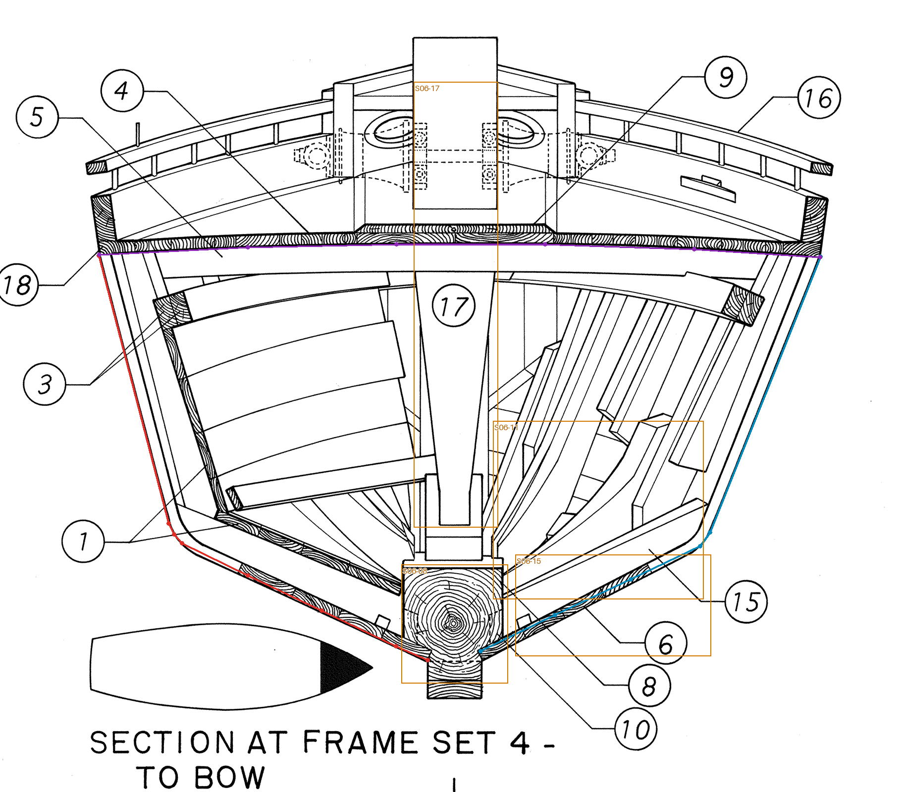
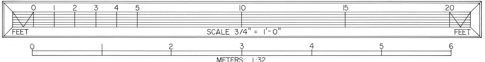

Full native view · Calibrated point/region data · Vector/source overlay · Unreviewed OCR
Imperial 3/4-inch scale = 1:16 conflicts with printed metric caption 1:32.
Trace datum: local Z=0 at bottom of external keel/shoe section; not the lines-plan baseline. Positive X is port; this section looks forward. These are open boundary guides, not finished member cutting templates.
Section names/frame numbers identify a view, not its longitudinal location. Lines stations, deck-beam numbers and hull-frame numbers must remain distinct.

The sheet key includes objects seen beyond the cut plane as well as cut members. Preserve the distinction between a projected fitting and a timber actually cut at the section.
| Note | Checked meaning | Dimensions (inches) | Source notes |
|---|---|---|---|
| S06-SURVEY | Fiberglass prevented measurement above/around chine except where ceiling was removed. Structural conception is based on partial ceiling removal, measured probing and nail patterns. New frames replaced in 1954 (11), versus older possibly original frames (15). | {} | S06-N01 |
| S06-01 | Ceiling: 1-3/4-inch pine; approximately 9 inches wide plus/minus 1 inch. Not shown in bow section to expose forward frames. | {"thickness": 1.75, "width": 9, "width_variation_plus_minus": 1} | S06-N02 |
| S06-02 | Centerboard trunk: pine; see sheet 7. | {} | S06-N02 |
| S06-03 | Clamp: 5-1/2 x 2-3/4-inch pine, reinforced forward with the same section in oak. | {"section": [5.5, 2.75]} | S06-N02 |
| S06-04 | Deck: mostly fir with pine replacements, 1-3/4 inches thick; widths 3-1/2 to 4 inches, some inboard 5 to 7 inches. | {"thickness": 1.75, "width_range": [3.5, 4], "inboard_width_range": [5, 7]} | S06-N02 |
| S06-05 | Deck beams mostly pine, average 5-1/2-inch square plus/minus 1 inch. Beams in structural conception detail are oak. Sheet 5 gives the more specific schedule. | {"section": [5.5, 5.5], "variation_plus_minus": 1} | S06-N02 |
| S06-06 | Hull strakes: estimated 2 inches thick, highly irregular widths; mostly oak below chine with some pine replacements (sheet 5 note 11). Chine oak; examined above-chine timbers pine. | {"thickness_estimate": 2} | S06-N02 |
| S06-07 | Keel: oak, average width 8 inches plus/minus 1 inch. Traditionally separate from keelson; dotted line indicates probable seam below rabbet for more watertight construction. | {"width": 8, "variation_plus_minus": 1} | S06-N02 S06-N03 |
| S06-08 | Keelson: oak; average 1 foot 4 inches wide x 10-1/2 inches at garboard. See sheet 5 note 12. | {"section_at_garboard": [16, 10.5]} | S06-N03 |
| S06-09 | Kingplank wood type not determined due to heavy paint. | {} | S06-N03 |
| S06-10 | Limber holes. | {} | S06-N03 |
| S06-11 | New frames: oak, NOT mortised into keelson. Knees are ROUNDED, NOT GROWN, at chine. Highly irregular dimensions; generally molded 1/2 inch larger than older frames (15). | {"molded_increase_approx": 0.5} | S06-N03 |
| S06-12 | Mast: 1 foot 1-1/2 inches, pine; iron hoop at foot, traditionally mortised into keelson (mortise dimensions not determined). Sides at/below deck faceted for chocks. | {"diameter": 13.5} | S06-N03 |
| S06-13 | Mast chocks: 2-inch pine, faceted between mast, deck and partners. | {"thickness": 2} | S06-N03 |
| S06-14 | Mast partners: 3-1/2 x 11-inch oak. | {"section": [3.5, 11]} | S06-N03 |
| S06-15 | Old frames: oak, mortised into keelson, tapered at chine; highly irregular dimensions. | {} | S06-N03 |
| S06-16 | Rails: 3-1/2 x 1-3/4-inch oak fastened with iron stanchions. | {"section": [3.5, 1.75]} | S06-N03 |
| S06-17 | Sampson post: 1 foot 2 inches x 5-inch head, 5 x 5-inch foot, mortised into stem knee. | {"head": [14, 5], "foot": [5, 5]} | S06-N03 |
| S06-18 | Waterway: oak. | {} | S06-N03 |
| S06-19 | Worm shoe: traditionally pine, average 3 x 8 inches plus/minus 1 inch; maximum width at centerboard 10 inches. | {"section": [3, 8], "variation_plus_minus": 1, "max_width_at_centerboard": 10} | S06-N03 |
